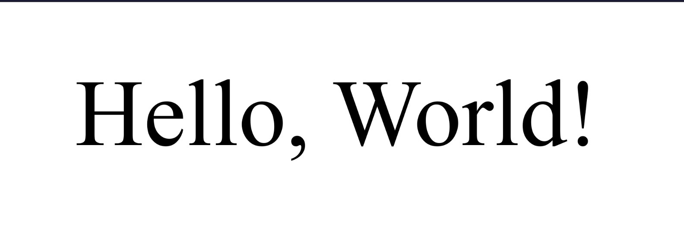
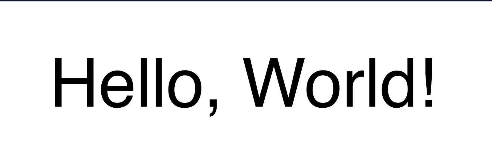

What are the fundamentals of typography?
DESCRIPTION
Typography is the art of choosing the right fonts and format to make text visually appealing and easy to read. "Type" refers to how the individual characters are designed and arranged. By choosing the right fonts for your project, you can evoke emotions, establish hierarchy, and reinforce your brain's identity.
We'll start by talking about typefaces and fonts. A typeface is the overall design and style of a set of characters, numbers, and symbols. It's like a blueprint for a family of fonts. A font is a specific variation of a typeface with specific characteristics, such as size, weight, style, and width.
Two very important examples of typefaces are serif and Sans Serif. The Serif typeface has a classical style with small lines as the end of characters. Serif typefaces are commonly used for printed materials, like books.

Some examples are Times New Roman, Georgia, and Garamond.
In cotrast, the San Serif typeface has more modern look, without the small lines at the end of characters. Sans Serif typefaces are commonly used in digital design because they are easy to read on screen. Some examples include Helvetica, Arial, And Roboto.

There are other typeface classifications, like Script, Blackletter, Monospaced